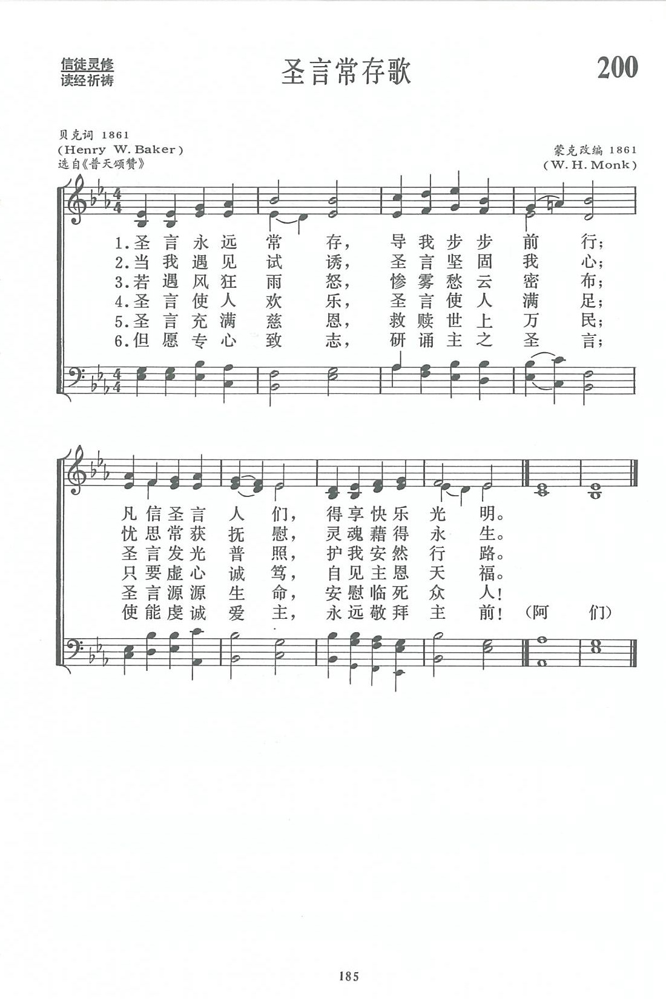

|
|
|
|
1 Lord, thy word abideth, 3 When the storms are o'er us, 4 Who can tell the pleasure, 5 Word of mercy, giving 6 O that we discerning
|
第200首《聖言常存歌》 |
|
https://www.zanmeishige.com/tab/13873.html?songbook=1&index=200

|
|
|
|
|


https://www.youtube.com/watch?v=J9GbeKjqLXI&list=PLHzDHFJxRCRWU1KmaW40rL-f9emFJMCgq&index=200 -
https://youtu.be/-yeZUBP7b7M -
Lord, Thy Word Abideth (Ravenshaw)
https://youtu.be/swmYXrAPsqI https://youtu.be/-4gqlFJ23Eo
| Text: | Lord, Thy Word Abideth |
| Author: | Henry W. Baker |
| Tune: | RAVENSHAW |
| Arranger: | William H. Monk |
| Short Name: | H. W. Baker |
| Full Name: | Baker, H. W. (Henry Williams), 1821-1877 |
| Birth Year: | 1821 |
| Death Year: | 1877 |
Baker, Sir Henry Williams,

Bart., eldest son of Admiral Sir Henry Loraine Baker, born in London, May 27, 1821, and educated at Trinity College, Cambridge, where he graduated, B.A. 1844, M.A. 1847. Taking Holy Orders in 1844, he became, in 1851, Vicar of Monkland, Herefordshire. This benefice he held to his death, on Monday, Feb. 12, 1877. He succeeded to the Baronetcy in 1851. Sir Henry's name is intimately associated with hymnody. One of his earliest compositions was the very beautiful hymn, "Oh! what if we are Christ's," which he contributed to Murray's Hymnal for the Use of the English Church, 1852. His hymns, including metrical litanies and translations, number in the revised edition of Hymns Ancient & Modern, 33 in all. These were contributed at various times to Murray's Hymnal, Hymns Ancient & Modern and the London Mission Hymn Book, 1876-7. The last contains his three latest hymns. These are not included in Hymns Ancient & Modern. Of his hymns four only are in the highest strains of jubilation, another four are bright and cheerful, and the remainder are very tender, but exceedingly plaintive, sometimes even to sadness. Even those which at first seem bright and cheerful have an undertone of plaintiveness, and leave a dreamy sadness upon the spirit of the singer. Poetical figures, far-fetched illustrations, and difficult compound words, he entirely eschewed. In his simplicity of language, smoothness of rhythm, and earnestness of utterance, he reminds one forcibly of the saintly Lyte. In common with Lyte also, if a subject presented itself to his mind with striking contrasts of lights and shadows, he almost invariably sought shelter in the shadows. The last audible words which lingered on his dying lips were the third stanza of his exquisite rendering of the 23rd Psalm, "The King of Love, my Shepherd is:"—
Perverse and foolish, oft I strayed,
But yet in love He sought me,
And on His Shoulder gently laid,
And home, rejoicing, brought me."
This tender sadness,
brightened by a soft calm peace, was an epitome of his poetical life.
Sir Henry's labours as the Editor of Hymns Ancient & Modern were
very arduous. The trial copy was distributed amongst a few friends in 1859;
first ed. published 1861, and the Appendix, in 1868;
the trial copy of the revised ed. was issued in 1874, and the publication
followed in 1875. In addition he edited Hymns for the
London Mission, 1874, and Hymns for Mission Services,
n.d., c. 1876-7. He also published Daily Prayers for those
who work hard; a Daily Text Book, &c. In Hymns Ancient
& Modern there are also four tunes (33, 211, 254, 472) the
melodies of which are by Sir Henry, and the harmonies by Dr. Monk. He died
Feb. 12, 1877.
Notes
Lord, Thy word abideth. Sir H. W. Baker. [Holy Scripture.] Written for and first published in Hymns Ancient & Modern, 1861. It has attained a great circulation, and is in common use in all English-speaking countries. It has also been translated into several languages. There is a translation in German by Miss Winkworth, in Biggs's Annotated Hymns Ancient & Modern, 1867, beginning "Herr, Dein Wort muss bleiben."
--John Julian, Dictionary of Hymnology (1907)
Tune Information
| Title: | RAVENSHAW |
| Arranger: | William Henry Monk |
| Meter: | 6.6.6.6 |
| Incipit: | 11345 56715 34542 |
| Source: | Ave Hierarchia, 1567 |
| Copyright: | Public Domain |
| Short Name: | William Henry Monk |
| Full Name: | Monk, William Henry, 1823-1889 |
| Birth Year: | 1823 |
| Death Year: | 1889 |
William H. Monk (b. Brompton, London, England, 1823; d. London, 1889)

is best known for his music editing of Hymns Ancient and Modern (1861, 1868; 1875, and 1889 editions). He also adapted music from plainsong and added accompaniments for Introits for Use Throughout the Year, a book issued with that famous hymnal. Beginning in his teenage years, Monk held a number of musical positions. He became choirmaster at King's College in London in 1847 and was organist and choirmaster at St. Matthias, Stoke Newington, from 1852 to 1889, where he was influenced by the Oxford Movement. At St. Matthias, Monk also began daily choral services with the choir leading the congregation in music chosen according to the church year, including psalms chanted to plainsong. He composed over fifty hymn tunes and edited The Scottish Hymnal (1872 edition) and Wordsworth's Hymns for the Holy Year (1862) as well as the periodical Parish Choir (1840-1851).
Bert Polman
第200首 圣言常存歌 Lord, Thy Word abideth _H.W.Baker
经文：“圣经都是上帝所默示的，于教训、督责、使人归正、教导人学义都是有益的，叫属上帝的人得以完全，预备行各样的善事”(提后3：16)。
这首诗是英国圣公会牧师贝克(H.W.Baker，1821-1877)特为第一本《古今圣诗集》而作的歌颂赞美圣言(指圣经)永存的名歌。贝克乃是《古今圣诗集》的首任文字主编，他于剑桥三一大学毕业后，1851年即回老家蒙克兰任牧师。他父亲曾被授与爵士之称，他承继父亲的爵位，所以生活比较优裕。
他辛勤地从事牧养工作，并大力修复故乡的礼拜堂，支持当时的牛津大学运动，主张复古，重视仪式，是有名的圣公会高派(见第l首注①)，并主张教牧人员守童身。他在任《古今圣诗集》主编时期，广征博采，翻译古诗与创作新诗兼筹并顾，除了把拉丁文、希腊文圣诗译出以外，也采用英国各时代佳作，而一半是当代的新作，使《古今圣诗》名符其实。
他自己写词作曲双管齐下，新颖清爽，押韵自然，表现出笃诚的信仰，在该集中被选上的最多。《新编》除选入贝氏所写的《圣言常存歌》外，还采用了第260首《善牧恩慈歌》。
这首诗的调名叫((RAVENSHAW》，原是1531年一位修道士米迦勒·维西(M.Weisse)所谱。维西(约生于1480年，卒于1534年)原是波希米亚某修道院的神甫，受马丁·路德著作的影响，联同其他两名天主堂神甫加入波希米亚弟兄会，曾与马丁·路德商讨编辑波希米亚圣诗集。此曲经蒙克(事略参阅第1O5首)改编而成。
LORD, THY WORD ABIDETH hymnstudiesblog
“Forever, O Lord, Thy word is settled in heaven” (Psalm 119:89)
INTRO.:
A hymn which speaks about the eternal nature of God’s word is “Lord, Thy Word Abideth” (#631 in Hymns for Worship Revised). The text was written by Henry Williams Baker (1821-1877). It first appeared in the 1861 edition of Hymns Ancient and Modern, for which he served as the chairman of the committee which compiled it. The tune (Ravenshaw) was adapted from a medieval melody (Gottes Sohn Ist Kommen) found in Ein Neu Gesengbuchlen edited by Michael Weisse, who was born around 1480 or 1488 at Neisse, Silesia (now Nysa, Poland), and attended the Pfarrgymnasium (pastoral school) there. Educated for the Roman Catholic priesthood, he studied at the Jagiellonian University of Cracow from 1504 and became a Franciscan monk for a while in Breslau (now Wrocław, Poland) in 1510. However, he and a couple of his colleagues, Johannes Zeising and Johann Mönch, were influenced by the writings of Martin Luther (1483-1546).
As a result Weisse and his two friends were expelled from Breslau around 1517. Leaving the Roman Catholic Church in 1518, they were admitted to the house of the Bohemian Brethren or Unitas Fratrum at Leutomischl in Bohemia (now Litomyšl, Czech Republic). This group, followers of reformer Jan Hus, was called by their enemies Piccards (Beggars) and later were known as Moravians. They allied themselves in Reformation times with Luther. In 1522, Weisse was sent as part of a delegation to Wittenberg, to compare the Brethren’s creed with that of Martin Luther and check for points of difference in doctrine. In 1531, Weisse was ordained as a priest of the Unitas Fratrum or Unity of the Brethren by a synod in Brandeis, and at the same time made Prediger (preacher) and Vorsteher (leader) of the German congregations of Brethren at Landskron in Bohemia and Fulnek in Moravia. Also that year, he published his hymnal for the Brethren, Ein Neu Gesengbuchlein (A new little hymnal), also known as Ave Hierarchia, at Jungbunzlau.
This was the first hymnal for the Brethren in the German language. It contained 157 hymns, 137 written, translated, or otherwise adapted by Weisse, for which he partially composed some music himself but mostly used melodies from the Bohemian tradition of the Brethren. Then the most extensive Protestant hymnal, it influenced other collections and was the first hymnal structured by topics. One of his hymns (“Christus, der uns selig macht”) was used in Johann Sebastian Bach’s St John Passion, Part II, third scene. Weisse, who joined the Unity’s Inner Council in 1532, died of food poisoning at Landskron, Bohemia (now the Czech Republic), on March 19, 1534, or possibly 1540. The melody, which is often attributed to Weisse, was arranged for Williams’s text in the 1861 Hymns Ancient and Modern by the music editor William Henry Monk (1823-1889). Other tunes used with the hymn include St. Cyprian Chope by Richard R. Chope in 1862, and Goetchius by Joseph Maclean in 1901. Among hymnbooks published by members of the Lord’s church for use in churches of Christ, the song is also found in the 2012 Psalms, Hymns, and Spiritual Songs edited by Steve Wolfgang et. al., in addition to Hymns for Worship.
The song points out the importance of God’s eternal word to our lives.
I. Stanza 1 tells us that God’s word will guide our footsteps
Lord, Thy Word abideth,
And our footsteps guideth;
Who its truth believeth
Light and joy receiveth.
A. God’s word is a lamp to our feet and a light to our pathway: Ps. 119:105
B. The reason is that it is the truth that will make us free: Jn. 8:32
C. As such it not only gives light but brings joy: Acts 8:4-8
II. Stanza 2 tells us that God’s word will cheer us in our tribulations
When our foes are near us,
Then Thy Word doth cheer us,
Word of consolation,
Message of salvation.
A. Those who wish to live right will find cheer or delight in God’s word: Ps.
1:1-2
B It offers consolation to those who are suffering: 2 Cor. 1:3-7
C. But most importantly it reveals the message of salvation: Eph. 1:13-14
III. Stanza 3 tells us that God’s word will protect us in the storms of life
When dark clouds are o’er us,
And the storms before us,
Then its light directeth,
And our way protecteth.
A. The greatest storm is the fight against sin, and God’s word will help us not
to sin: Ps. 119:11
B. It will direct us in times of temptation: 1 Cor. 10:13
C. And it will protect us from the evil one: Eph. 6:14-16
IV. Stanza 4 (not in HFWR) tells us that God’s word will impart treasure
Who can tell the pleasure,
Who recount the treasure,
By Thy Word imparted
To the simple hearted?
A. The testimony of God’s word is sure, making the simple wise, and is thus more
to be desired than gold: Ps. 19:7-10
B. It is like a pearl of great price: Matt. 13:45-46
C. Therefore, it will enable us to lay up treasure in heaven: Matt. 6:19-20
V. Stanza 5 (also not in HFWR)
tells us that God’s word provides for the needs of both living and dying
Word of mercy, giving
Succor to the living;
Word of life, supplying
Comfort to the dying!
A. God’s word makes known His mercy: Ps. 138:7-8
B. It gives succor to the living because Jesus came to bring life: Jn. 10:10
C. And it gives comfort to those who are dying in the Lord: Rev. 14:13
VI. Stanza 6 (#4 in HFWR)
tells us that God’s word will lead us to be with the Lord evermore
O that we, discerning
Its most holy learning,
Lord, may love and fear Thee,
Evermore be near Thee!
A. God as our Shepherd wants us to dwell in His house forevermore: Ps. 23:1-6
B. But to do so, we must first discern or understand His will—how?: Eph. 3:3-5
C. Then we must love and fear Him by keeping His commandments: Eccl. 12:13-14, 1
Jn. 5:3
CONCL.:
The God of the universe has spoken to mankind. He revealed His will for us today through His Son who sent the Holy Spirit to guide inspired apostles and prophets in producing the written word which contains God’s message for the whole world. This word of God has been preserved since then and will continue to the end of time. Thus, we can praise Him for His revelation, saying, “Lord, Thy Word Abideth.”
https://hymnstudiesblog.wordpress.com/2018/06/18/782998/
William Henry Monk 1823 –1889
William Henry Monk (16 March 1823 – 1 March 1889[1]) was an English organist, church musician and music editor who composed popular hymn tunes, including "Eventide", used for the hymn "Abide with Me", and "All Things Bright and Beautiful". He also wrote music for church services and anthems.[1]
Biography[edit]


{kind=link}
William Henry Monk was born in London on 16 March 1823. His youth is not well-documented, but it seems that he developed quickly on the keyboard, but perhaps less so in composition.
By age 18, Monk was organist at St Peter's Church, Eaton Square (Central London). He left after two years, and moved on to two more organist posts in London (St George's Church, Albemarle Street, and St Paul's Church, Portman Square). He spent two years in each. Each served as a stepping stone toward fostering his musical ambitions.
In 1847, Monk became choirmaster at King's College London. There he developed an interest in incorporating plainchant into Anglican services, an idea suggested by William Dyce, a King's College professor with whom Monk had much contact. In 1849, Monk also became organist at King's College.
In 1852, he became organist and choirmaster at St Matthias' Church, Stoke Newington, where he made many changes: plainchant was used in singing psalms, and the music performed was more appropriate to the church calendar. By now, Monk was also arranging hymns, as well as writing his own hymn melodies. In 1857, his talents as composer, arranger, and editor were recognized when he was appointed the musical editor of Hymns Ancient and Modern, a volume first published in 1861, containing 273 hymns. After supplements were added (second edition, 1875; later additions or supplements, 1889, 1904, and 1916) it became one of the best-selling hymn books ever produced. It was for this publication that Monk supplied his famous "Eventide" tune which is mostly used for the hymn "Abide with Me", as well as several others, including "Gethsemane", "Ascension", and "St Denys". The well-known hymn 'God, that madest earth and heaven' by Bishop Heber and Archbishop Whately, two of the greatest Regency-era clergymen, was set to music in Monk's tune Nutfield. He was also responsible for the tune St Matthias often used for the hymn 'Sweet Saviour, bless us ere we go.' The late Victorian Anglo-Saxon revivalist tune St Ethelwald was put to the immortal words of the prolific writer Charles Wesley called 'Soldiers of Christ, arise.'
In 1874, Monk was appointed professor of vocal studies at King's College; subsequently he accepted similar posts at two other prestigious London music schools: the first at the National Training School for Music in 1876, and the second at Bedford College in 1878. Monk remained active in composition in his later years, writing not only hymn tunes but also anthems and other works. In 1882 Durham University awarded him an honorary Mus. Doc.[1]
He died on 1st March 1889 and was buried on the eastern side of Highgate Cemetery in north London.
References[edit]
- ^ a b c Lee, Sidney, ed. (1894). . Dictionary of National Biography. Vol. 38. London: Smith, Elder & Co.
External links[edit]
|
|
Wikisource has original works written by or
about: William Henry Monk |
|
|
Wikimedia Commons has media related to William Henry Monk. |
- Works by or about William Henry Monk at Internet Archive
- Free scores by William Henry Monk in the Choral Public Domain Library (ChoralWiki)
- The Mutopia Project has compositions by William Henry Monk
- William Henry Monk at IMDb
- William Henry Monk at Find a Grave
- Free scores by William Henry Monk at the International Music Score Library Project (IMSLP)
https://en.wikipedia.org/wiki/William_Henry_Monk